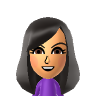

Hey! Welcome to my portfolio website! My name is K*** L****, and I am a member of the Girls Who Code sisterhood. I am also a part of my school's track team, national honor society, national music honor society, jazz choir, chorale choir, puzzle club, and new generation club. I enjoy hanging out with friends, drinking boba, and playing with hypoallergenic puppies. In my free time, I read :)
~My go-to Starbucks drinks are the Vanilla Bean Frapp when it's warm and the hot chocolate when it's chilly.
~Tadashi from Big Hero Six is my favorite Disney character.
Some foods I like are boba, spam musubi, and pho. For the most part I never really dislike food LOL but if I have something too many times in a row, I'll get tired of it.